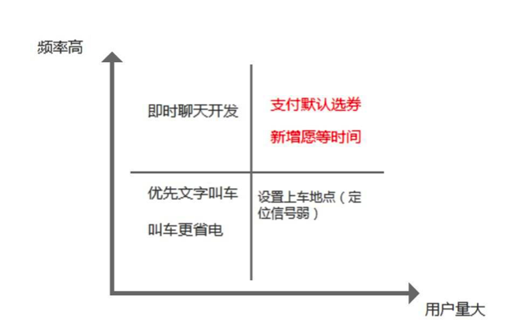
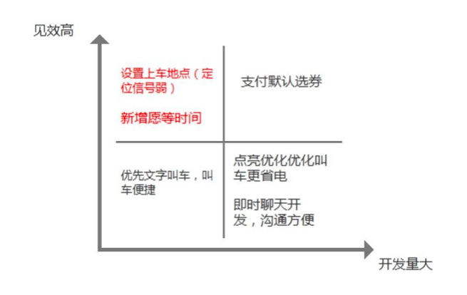

如何通过分析功能的用户量、需求频率、开发难度、开发效果，来完成滴滴早期功能的优先级排序？
举个例子:
滴滴打车早期第一版核心打车功能已上线，之后马上要进行功能迭代。
请为以下功能完成优先级排序
新增”愿等时间“，多等司机一小会儿，提高打车成功率～
电量优化，叫车更省电
优先文字叫车，更易更快打到车
定位信号弱时，可自己设置上车点
支付时默认选券，省钱更便捷
即时聊天开放，沟通更方便
在不同的产品经理看来，这道题一定有不同的分析和回答。功能的优先级分析和排序，其实也没有绝对意义上的对错。大家在分析时，只要逻辑清晰，有理有据即可。
下面，给大家提供一个 三节课产品实习生小焦，运用课程所学知识，对以上功能的优先级作出的分析和排序
一、分析需求的用户量和频率

一、频率高，用户量大
支付默认选券：支付是每个用户必然经过的一个流程，在支付的时候如果能检测用户是否有能使用的优惠券且自动使用使用就能帮助用户更加快速付款且兼顾服务者和消费者的利益。
新增愿等时间：由于第一版滴滴打车主要是让用户能打车，前期的供给方并不是很多（司机），所以愿等待能大大提高用户打车的成功率，在一方面也留住用户，也是每个用户必须经过的流程。
二、用户量大，频率低
设置上车地点（定位信号弱时）：滴滴打车起步都在一线城市铺开，一线城市说明基础设施完善，信号塔多，没有信号是频率次数比较少。
三、用户量小，频率高
即时聊天开发：沟通是属于乘客和司机必要的条件，但是开发即时通讯并不能很好的解决，即时通讯文字传输很大程度上占用司机开车的时间并且分散司机的注意力，虽然沟通频率高但使用的用户较小。
四、用户量小，频率低：
叫车更省电：用户很少在意应用消耗手机的电量，毕竟是主流用户而不是“专家级用户”（意味着你的产品要极致完美）
二、分析需求的开发难度和效果

一、见效高，开发量小
设置上车地点：在用户发生信号弱时能让用户自己定位自己位置，给予用户选择权和控制权
新增愿等时间：时间通知也是数据的流向前期可以考虑是文字或者系统端提示司机用户愿意等待的时长。
二、见效高、开发量大。
支付默认选券：默认选券能帮助用户节省流程，但是在初期需要系统要对优惠券进行多种判定，开发量虽然大，但是是用户必经之路。
三、见效低，开发量小：
文字叫车：在前期用户主要想叫车更方便而不是是用打字的方式叫车，增加用户动作。
四、见效低，开发量大：
叫车省电：用户在当时对应用是否省电没啥概念，但是应用省电意味着应用要和GPS协调、网络传输协调，也意味着整个应用技术架构更加”牛逼“。
即时聊天开发：用户与司机少数用文字聊天，多数用电话沟通，自我开发聊天比较复杂，但是可以考虑接入第三方的SDK。
三、综合以上分析，按顺序对产品功能作出优先级排序
（从上往下，需求优先级重要程度逐渐下降）
1.新增愿等时间
2.支付默认选券
3.设置上车地点
4.文字叫车：
5.即时聊天开发
6.叫车更省电：